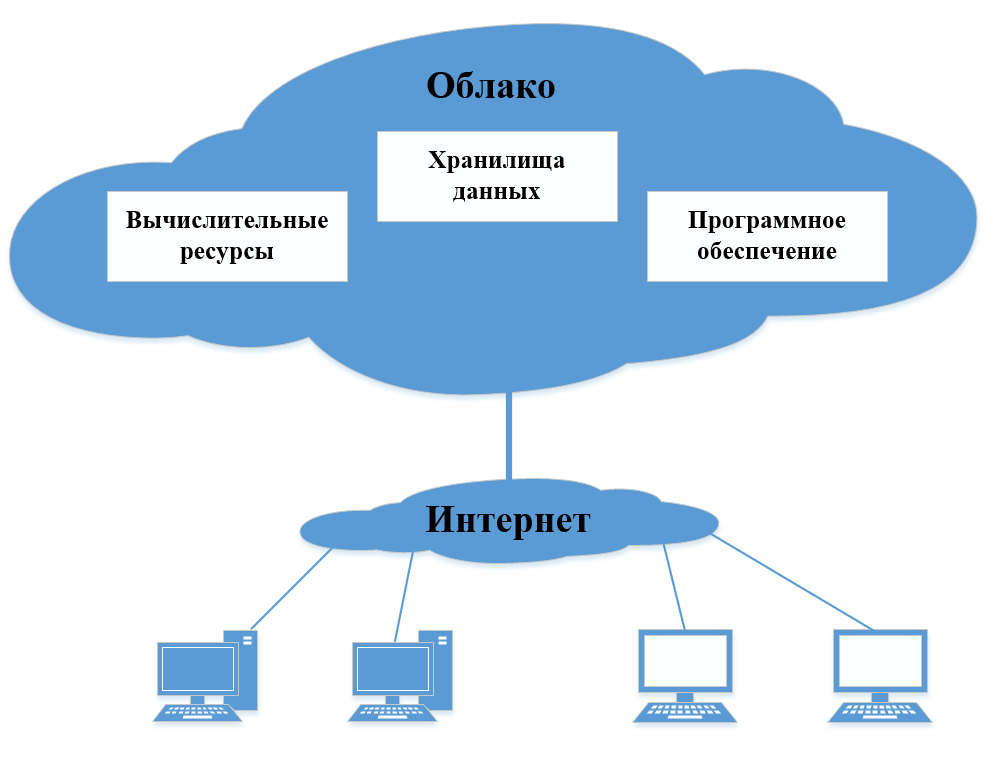
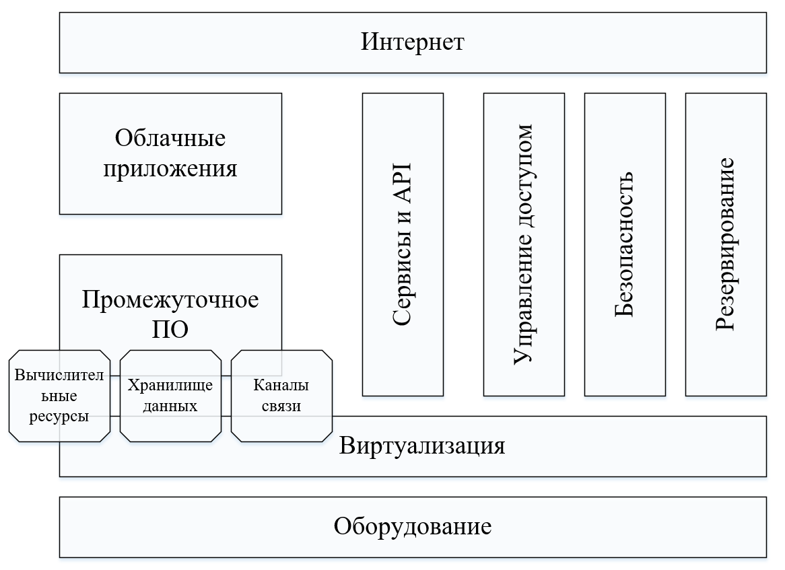
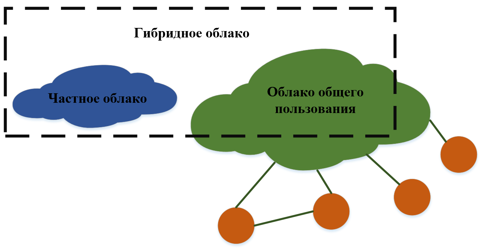

Название лекции
Разработка динамичесих веб приложений
Гладкий Максим Валерьевич / github:MaksHladki
Определения
Облачные технологии - удобная среда для хранения и обработки информации, объединяющая в себе аппаратные средства, лицензионное
программное обеспечение, каналы связи, а также техническую поддержку пользователей
Облачные вычисления - технология распределенной обработки данных, при которой совместно используемые компьютерные ресурсы,
программное обеспечение и данные предоставляются пользователям по запросу как услуги через Интернет
1950е-1990е
- 1950е - появление мейнфреймов позволило нескольким пользователям получить доступ к центральному компьютеру
- 1960е - появление первый идей облачных вычислений. Концепция «межгалактической компьютерной сети» Дж. Ликлайдера
- 1970е - появление концепции модели приложений, при которых все вычисления и обработка информации осуществляются не
на компьютере пользователя, а на удаленных серверах
- 1999 - образование компании Salesforce.com, которая предоставила доступ к своему ПО через сайт по принципу «программное
обеспечение как сервис» (SaaS)
2000-2009
- 2002 - Amazon.com начинает предоставлять услуги по доступу к вычислительным ресурсам через Интернет книжный магазин
- 2006 - Amazon запустила сервис Elastic Compute cloud (EC2), позволяющий пользователям запускать свои собственные приложения
- 2006 - Google выпускает сервис "Google Apps для вашего домена"
- 2007 - Google выпускает коммерческую версию для предприятий. Хранилище Gmail расширено до 25 ГБ
- 2008 - Google App Engine
- 2008 - Microsoft выпускает первую весию облачной ОС Windows Azure
- 2008 - HP, Intel и Yahoo создают вычислительную лабораторию "Cloud COMPUTING"
2010 - наши дни
- 2010 - Выходит публичная версия сервиса Dropbox
- 2010 - Выделены модели IaaS, PaaS, SaaS
- 2011 - Национальный институт стандартов и технологий сформировал определение понятия "облачные вычисления"
- 2014 - Большинство крупнейших ИТ-вендоров (Google, Microsoft, HP, Intel, SAP, IBM, Oracle и т.д.) имеют собственные
решения cloud computing
- 2014-наши дни - Работают маркетологи
Поставщики облачных решений
| Cloudera |
GigaSpaces |
Heroku |
SAP |
| Parallels |
Red Hat |
Amazon |
Zoho |
| AT&T |
Cisco |
Dell |
Dropbox |
| IBM |
HP |
McAfee |
VMware |
| Trend Micro |
Citrix |
Google |
NTT |
| Microsoft |
Oracle |
Salesforce |
Yandex |
Почему именно "Облачные"

Масштабируемость
Масштабируемое приложение способно выдерживать большую нагрузку за счет увеличения количества одновременно запущенных экземпляров
облачных систем. Для одновременного запуска множества экземпляров облачных систем используется типовое оборудование,
что снижает общую стоимость владения и упрощает сопровождение инфраструктуры
Эластичность
Решает задачу моментального изменения количества вычислительных ресурсов, выделяемых для работы информационной системы. Эластичность
позволяет быстро нарастить мощность инфраструктуры без необходимости проведения начальных инвестиций в оборудование
и программное обеспечение
Изолированность
Возможность независимо обслуживать пользователей из разной организации в рамках одного сервиса (одной инсталляции или развертывания).Клиенты
не должны видеть данные друг друга
Плата за использование
Позволяет перевести часть капитальных издержек в операционные. Приобретая только необходимый объем ресурсов, можно оптимизировать
расходы, связанные с работой информационных систем организации
Самообслуживание
Предполагает обеспечение доступа пользователя через Интернет к управлению вычислительной мощностью. Самообслуживание позволяет
потребителям оперативно запросить и получить требуемые ресурсы облачной системы
Повышенная надежность
ЦОД поставщика облачных услуг имеет резервные источники питания, охрану, профессиональных работников, регулярное резервирование
данных, высокую пропускную способность Интернет канала, высокая устойчивость к DDOS атакам
Объединение ресурсов
Поставщик услуг объединяет ресурсы для обслуживания большого числа потребителей в единый пул для динамического перераспределения
мощностей между потребителями в условиях постоянного изменения спроса на мощности; при этом потребители контролируют
только основные параметры услуги (например, объём данных, скорость доступа), но фактическое распределение ресурсов,
предоставляемых потребителю, осуществляет поставщик
Широкий сетевой доступ
Предоставляемые вычислительные ресурсы доступны по сети через стандартные механизмы для различных платформ, тонких и толстых
клиентов (мобильных телефонов, планшетов, ноутбуков, рабочих станций и других устройств)
Концепция архитектуры

Модели развертывания облачных систем
- Private Cloud
- Public Cloud
- Hybrid Cloud
Определение
Инфраструктура, предназначенная для использования одной организацией, включающей несколько потребителей (например, подразделений
одной организации), возможно также клиентами и подрядчиками данной организации
Особенности
- Весь бизнес выстроен на приложениях и данных, уровень требований к защите информации – критически высокий
- Бизнес принадлежит к одной из тех отраслей, где требования к безопасности и конфиденциальности информации исторически
очень высоки (военная промышленность, госсектор – яркий пример)
- Компания достаточно велика для того, чтобы создание собственного современного ЦОДа было рентабельным
Преимущества
- Широкие возможности для контроля (все компоненты ИТ-инфраструктуры остаются на стороне организации)
- Объедение ресурсов в пулы
- Высокий уровень безопасности (отребителем сервиса является одна единственная организация)
- Запрет на обработку персональных данных граждан за пределами страны
- Более высокая производительность частных облаков
- Повышение оперативности работы ИТ-отделов
Недостатки
- Значительные расходы на всех этапах жизненного цикла облака, от внедрения до поддержки работоспособности
- Затраты на администрирование и привлечение квалифицированных ИТ-специалистов
- Проблема горизонтальной масштабируемости
- Более существенные риски потери работоспособности сервисов и или потери данных из-за физических угроз для инфраструктуры
- Возможные пролемы с масштабируемостью, если когда ресурсов инфраструктуры может оказаться недостаточно
Определение
Публичное облако (public cloud) — инфраструктура, предназначенная для свободного использования широкой публикой. Публичное
облако может находиться в собственности, управлении и эксплуатации коммерческих, научных и правительственных организаций
(или какой - либо их комбинации). Публичное облако физически существует в юрисдикции владельца — поставщика услу
Особенности
- Стандартизированное приложение используется большим количеством людей, пример – электронная почта
- Необходимо протестировать работу программного кода или приложения
- Используется SaaS-приложение от проверенного провайдера, имеющего проработанную стратегию в области безопасности
- Требуется подкрепить возможности собственной инфраструктуры в ситуации пиковых нагрузок
- Требуется подкрепить возможности собственной инфраструктуры в ситуации пиковых нагрузок
- Облачные сервисы нужны для обеспечения совместной работы
Преимущества
- Большая простота и эффективность использования
- Доступ к приложениям не требует ничего более, кроме стабильного Интернет-соединения
- Тарификация услуг осуществляется помесячно и на базе годовых планов, система тарифов гибкая, и, как правило, провайдеры
реализуют скидки при оплате за длительный промежуток времени
- реальная возможность сократить ИТ-бюджет за счет отсутствия расходов на «железо» и софт.
- возможность отказаться от услуг ИТ-специалистов в конкретной организации;
- Гибкость и масштабируемость: модель pay-as-you-go позволяет оплачивать именно столько ресурсов, сколько требуется в
данный момент, и оперативно регулировать этот параметр в большую или меньшую сторону.
- Поскольку сервера приложений находятся в облаке, исключается риск простая бизнес-процессов из-за серверных аварий.
Виртуальные сервера провайдеров чаще всего сконфигурированы на мощной физической базе, размещены в крупных дата-центрах,
где возможное время простоев исчисляется минутами в год.
- отсутствие долгосрочных контрактов и взаимных обязательств с ИТ-компаниями (позволяет менять облачного провайдера по
мере необходимости);
Недостатки
- отсутствие возможности контроля со стороны организации;
- Более слабая защищенность данных;
- Медленная скорость: производительность публичных облачных сервисов напрямую зависит от стабильности и широты пропускания
интернет-соединения, в некоторых случаях передачи данных может быть медленной. При оперировании большими объемами
данных публичные облака не выдерживают конкуренции с частными по производительности.
Выбирают когда
- ‒ стандартизированное приложение используется большим количеством людей (электронная почта);
- ‒ необходимо протестировать работу программного кода или приложения
- ‒ используется SaaS-приложение от проверенного провайдера, имеющего проработанную стратегию в области безопасности;
- ‒ требуется подкрепить возможности собственной инфраструктуры в ситуации пиковых нагрузок;
- ‒ облачные сервисы нужны для обеспечения совместной работы нескольких организаций.
Определение
Гибридное облако (hybrid cloud) — это комбинация из двух или более различных облачных инфраструктур (частных, публичных или
общественных), остающихся уникальными объектами, но связанных между собой стандартизованными или частными технологиями
передачи данных и приложений (например, кратковременное использование ресурсов публичных облаков для балансировки нагрузки
между облаками).
Преимущества
- критически важные приложения остаются внутри предприятия, а остальные располагаются в облаке;
- облако используется в качестве временного рабочего пространства;
- облако используется в случае внезапных пиковых нагрузок и дополнительной емкости;
Недостатки
- отсутствие контроля над данными: безопасность и техническое обслуживание должен обеспечивать поставщик услуг;
- неопределенность физического местонахождения данных;
- отсутствие контроля над резервным копированием, что повышает риск потери данных.
Примеры использования
- ‒ партнера, когда критически важные приложения остаются внутри предприятия, а остальные располагаются в облаке;
- ‒ полигона, когда облако используется в качестве временного рабочего пространства;
- ‒ дополнительной емкости, когда облако используется в случае внезапных пиковых нагрузок.
Взаимодействие моделей

Основные критерии при выборе модели
- ‒ бюджет. Если речь идёт о предприятии с небольшим бюджетом, то стоит начать рассмотрение именно с предложений публичных
облачных провайдеров. В таком случае не придётся тратиться и на покупку программно-аппаратной базы, и на оплату труда
ИТ-специалистов. Если речь идёт о предприятии среднего уровня и крупнее, которое обладает заложенными на год ИТ-средствами
в бюджете, частное облако может оказаться даже дешевле публичного в долгосрочной перспективе: для того, чтобы это
определить, потребуется сделать расчеты;
- ‒ безопасность. Если от предприятия требуется соответствие каким-то особым стандартам безопасности, например, это может
быть актуально для госкомпаний, то следует рассматривать в первую очередь частные облачные модели, так, как только
такая схема работы облака может обеспечить защиту данных;
- ‒ контроль над оборудованием. Пользователи услуг SaaS не имеют никакого контроля над оборудованием и виртуальными серверами,
на базе которых работают приложения, если они находятся в публичном облаке на стороне провайдера;
- ‒ контроль над простоями. В частном облаке предприятия могут постоянно отслеживать доступность всех сервисов для конечных
пользователей, с помощью средств управления и администрирования облачными ресурсами перекладывая нагрузку на свободные
вычислительные ресурсы. В частном облаке удобнее тестировать новые приложения, алгоритмы и сценарии работы на базе
виртуальных сред, что совершенно не мешает работе основных бизнес-приложений;
- ‒ управление SLA (соглашение об уровне сервиса). Для оказания публичных облачных сервисов используются типовые соглашения
SLA. Исключения могут быть сделаны только для действительно крупных клиентов. В частном облаке компания может прописать
такой SLA, который ей требуется, после получения индивидуальных условийы и гарантии от провайдера.
Архитектура облачных сервисов
Инфраструктура как услуга (IaaS)
Определение
IaaS – Infrastructure-as-a-Service - Инфраструктура как услуга – предоставляется как возможность использования облачной инфраструктуры
для самостоятельного управления ресурсами обработки, хранения, сетями и другими фундаментальными вычислительными ресурсами,
например, потребитель может устанавливать и запускать произвольное программное обеспечение, которое может включать
в себя операционные системы, платформенное и прикладное ПО. Потребитель может контролировать операционные системы,
виртуальные системы хранения данных и установленные приложения, а также обладать ограниченным контролем за набором
доступных сетевых сервисов (например, межсетевым экраном, DNS).
Контроль и управление основной физической и виртуальной инфраструктурой облака, в том числе сети, серверов, типов используемых
операционных систем, систем хранения осуществляется облачным провайдером
Ярким примером такого подхода является облако компании Amazon - Amazon Web Services, состоящее из Elastic Compute Cloud (EC2),
предоставляющего информационные ресурсы в виде сервисов и Simple Storage Service (S3) для хранения информации.
Следует отметить, что задолго до появления облачных вычислений инфраструктура была доступна как сервис. Такой подход назывался
«коммунальные вычисления », и это словосочетание и сегодня часто применяется некоторыми авторами при описании инфраструктурного
уровня облачных систем
Особенности
- Ресурсы распространяются в качестве услуги.
- Существует возможность динамического расширения (и сокращения) объёмов потребляемых ресурсов.
- еализованы гибкие модели оплаты (например, оплата только за фактически потребленные ресурсы — модель pay as you go).
- Как правило, с одним физическим «железным» ресурсом работают несколько пользователей.
Преимущества
- отсутствие необходимости закупать дорогое серверное оборудование, модернизировать аппаратную инфраструктуру и заниматься
увеличением вычислительных мощностей сервера;
- отсутствие расходов на плановый/внеплановый ремонт серверного оборудования;
- не нужно выделять отдельное помещение с необходимой вентиляцией для размещения серверного оборудования;
- данные клиентов хранятся в распределенной и резервированной сети хранения, а доступ к ним уполномоченные сотрудники
могут получить через интернет по безопасной защищенной сети IPsec/VPN;
Недостатки
- достаточно сильную зависимость от провайдера, необходимость стабильной связи интернет-соединения
- вопрос недоверия: далеко не все компании готовы разместить данные в инфраструктуре третьей стороны;
Когда стоит использовать
- Потребность компании в ИТ-ресурсах не одинакова в разные моменты времени — бывают сильные всплески, когда потребности
вырастают, но они не длятся долго.
- Компания — это стартап, у которого просто нет денег на покупку железа и создания собственной инфраструктуры.
- Организация быстро растет, и возникает проблема постоянного масштабирования инфраструктуры.
- Существует потребность в снижении операционных издержек, в том числе на оборудование.
- При запуске нового экспериментального направления бизнеса, которое нужно протестировать или которое не требует постоянного
выделения ИТ-ресурсов.
Когда не стоит использовать
- Если компания является игроком регулируемой отрасли, правила которой не разрешают хранение данных на серверах, не принадлежащих
компании (и часто находящихся в другой стране).
- IaaS может не подойти тем компаниям, которым требуется высочайший уровень производительности — его проще достигнуть
с помощью использования выделенных инфраструктурных ресурсов (hosted infrstructure).
Платформа как услуга (PaaS)
Определение
PaaS - Platform-as-a-Service - Платформа как услуга — модель, когда потребителю предоставляется возможность использования
облачной инфраструктуры для размещения базового ПО для последующего размещения на нём новых или существующих приложений
(собственных, разработанных на заказ или приобретённых тиражируемых приложений). В состав таких платформ входят инструментальные
средства создания, тестирования и выполнения прикладного ПО (системы управления базами данных, связующее ПО, среды
исполнения языков программирования), предоставляемые облачным провайдером.
Контроль и управление основной физической и виртуальной инфраструктурой облака, в том числе сети, серверов, операционных
систем, хранения осуществляется облачным провайдером, за исключением разработанных или установленных приложений, а
также, по возможности, параметров конфигурации среды (платформы).
Платформа - это слой абстракции между программными приложениями (SaaS) и виртуализованной инфраструктурой (IaaS). Основной
целевой аудиторией PaaS являются разработчики приложений.
Примером реализации PaaS является платформа Google App Engine, обеспечивающая исполнение пользовательских приложений на инфраструктуре
Google
Распространенные сценарии PaaS
- Среда для разработки. PaaS предоставляет среду, которую разработчики используют для разработки или настройки облачных
приложений. Аналогично тому, как создается макрос для Excel, PaaS позволяет разработчикам создавать приложения с использованием
встроенных компонентов программного обеспечения. Облачные функции, такие как масштабирование, высокая доступность
и поддержка нескольких пользователей, уже включены и снижают объем кода, который необходимо разрабатывать.
- Бизнес-аналитика. Средства, предоставляемые в рамках PaaS, позволяют организациям анализировать данные, находить тенденции
и делать прогнозы с целью улучшения планирования, решений по продуктам, повышения возврата от инвестиций и принятия
других бизнес-решений.
- Дополнительные службы. Поставщики PaaS могут предлагать другие службы, которые повышают возможности приложений, такие
как рабочие процессы, каталоги, безопасность и планирование.
Преимущества
- отсутствует необходимость в закупке серверов и создания центра обработки данных;
- исключены проблемы с законодательством из-за нелицензионного программного обеспечения;
- клиент имеет свободу в установке и выборе ПО и служб;
Недостатки
- пользователи должны обращать внимание на безопасность приложений, а также на вопросы, связанные с управлением API (подтверждение
прав доступа, авторизация и проверка подлинности и т.д.);
Программное обеспечение как услуга (SaaS)
Определение
SaaS – Software-as-a-Service - Программное обеспечение как услуга — модель, в которой потребителю предоставляется возможность
использования прикладного программного обеспечения провайдера, работающего в облачной инфраструктуре и доступного из
различных клиентских устройств ¾посредством тонкого клиента (например, из браузера (веб-почта); ¾посредством интерфейса
программы.
С точки зрения пользователя, основным достоинством SaaS является ценовое преимущество перед «классическим» ПО. Оплата SaaS
осуществляется по модели «оплата по мере использования», что означает отсутствие необходимости инвестиций в собственную
аппаратную и программную инфраструктуру.
Ярким примером SaaS является комплекс Google Apps, включающий в себя такие системы как Google Mail и Google Docs.
ограничение
Контроль и управление основной физической и виртуальной инфраструктурой облака, в том числе сети, серверов, операционных
систем, хранения, или даже индивидуальных возможностей приложения (за исключением ограниченного набора пользовательских
настроек конфигурации приложения) осуществляется облачным провайдером.
Особенности
- приложение приспособлено для удаленного использования;
- одним приложением пользуется несколько клиентов (приложение коммунально);
- оплата взимается либо в виде ежемесячной абонентской платы, либо на основе объёма операций;
- техническая поддержка приложения включена в оплату;
- модернизация и обновление приложения происходит оперативно и прозрачно для клиентов.
Характеристики
- доступ к программному обеспечению, разработанному в соответствии с моделью ПО как услуга, предоставляется удалённо
по сетевым каналам и, как правило, через веб-интерфейс, кроме того, могут использоваться тонкие клиенты и терминальный
доступ;
- программное обеспечение развёртывается в центре обработки данных в виде единого программного ядра, с которым работают
все заказчики;
- программное обеспечение предоставляется на условиях уплаты периодических арендных платежей;
- обслуживание и обновление программного обеспечения выполняется централизованно на стороне поставщика приложения, предоставляемого
как услуга (SaaS);
- стоимость технической поддержки обычно включается в арендную плату.
Преимущества
- приложение приспособлено для удаленного использования;
- оплата взимается либо в виде ежемесячной абонентской платы, либо на основе объёма операций;
- техническая поддержка приложения включена в оплату;
- модернизация и обновление приложения происходит оперативно и прозрачно для клиентов;
- программное обеспечение развёртывается в центре обработки данных в виде единого программного ядра, с которым работают
все заказчики;
Недостатки
- оказывается неэффективной для систем, требующих глубокой индивидуальной адаптации под каждого заказчика;
- опасения применять SaaS из-за соображений безопасности и возможной утечки информации со стороны поставщика услуг;
- ограничивающим фактором SaaS является необходимость наличия постоянно действующего подключения к Интернету;
Плюсы для разработчиков
- Рост популярности веб-сервисов для конечных пользователей;
- Развитие веб-технологий, большие функциональные возможности веб-приложений и простота их реализации;
- Быстрые процессы внедрения и сравнительно низкие затраты ресурсов на обслуживание конкретного клиента;
- Лёгкое проникновение на глобальные рынки;
- Отсутствие проблем с нелицензионным распространением ПО;
- В отличие от классической модели, SaaS-клиент привязывается к разработчику — он не может отказаться от услуг разработчика
и продолжать использовать систему. Таким образом, обеспечивается защита инвестиций разработчика в процесс продаж;
- В долгосрочном периоде доходы от SaaS могут превысить доходы от продаж лицензий и оказания технической поддержки (даже
с учётом расходов на хостинг и управление приложениями);
- азработчик выбирает рабочую программно-аппаратную платформу из соображений её технико-экономической эффективности,
а не из соображений её распространенности у возможных пользователей ПО.
Альтернативы SaaS
Из-за вышеперечисленных страхов появились альтернативные технологии по отношению к SaaS. Они представляют собой промежуточные
варианты перехода от традиционного ПО к SaaS, и скорее всего, скоро исчезнут. S+S. Это альтернативный бренд, продвигаемый
Microsoft, который отличается от SaaS тем, что на компьютере пользователя используется не браузер, а программный клиент.
Аренда (хостинг) приложений. Этот вариант отличается от SaaS лишь архитектурой серверной части и не заметен для пользователя.
Поэтому часто хостеры приложений называют свои услуги SaaS-сервисами. Отличие в том, что классические SaaS сервисы
имеют multitenant-архитектуру, т.е. одно приложение обслуживает много клиентов, а хостинг приложений предполагает установку
отдельной копии для каждого клиента. Второй вариант дает больше возможностей настройки, но в то же время, он более
сложен для администрирования и обновления, и поэтому стоит дороже. Использование облачных платформ. Компании, которые
боятся отдавать свои данные стороннему провайдеру, иногда ограничиваются тем, что арендуют в интернете не приложения,
а только компьютерные мощности и устанавливают на них свои (купленные) системы. Для такого варианта существуют облачные
платформы. Ниже приведены некоторые интересные новости, которые помогут вам лучше понять, что такое SaaS.
Другие модели обслуживания в облачных системах
аппаратное обеспечение как услуга (Hardware as a Service - HaaS)
пользователю предоставляется оборудование на правах аренды, которое он может использовать для собственных целей. По сути
HaaS напоминает IaaS за исключением того что вы имеете голое оборудование на основе которого разворачиваете свою собственную
инфраструктуру с использованием наиболее подходящего ПО. Достоинством HaaS является возможность экономить на обслуживании
оборудования.
рабочее место как услуга (Workplace as a Service - WaaS):
компания использует облачные вычисления для организации рабочих мест своих сотрудников, настроив и установив все необходимое
ПО, необходимое для работы персонала
¾ данные как услуга (Data as a Service - DaaS):
пользователю предоставляется дисковое пространство, которое он может использовать для хранения больших объемов информации.
¾ безопасность как услуга (Security as a Service):
пользователям предоставляется возможность быстро развертывать продукты, позволяющие обеспечить безопасное использование веб
-технологий, электронной переписки, а также локальной системы, что позволяет экономить на содержании своей собственной
системы безопасности.
все как услуга (Everything as a Service - EaaS)
пользователю будет предоставлено все от программно -аппаратной части и до управления бизнес процессами, включая взаимодействие
между пользователями, при наличии доступа в сеть Интернет. EaaS - это просто более общее понятие по отношению к вышеперечисленным
услугам.
мультитернарная архитектура
http://k504.xai.edu.ua/html/ucheba/rss/RSS_Lekciya_10.pdf